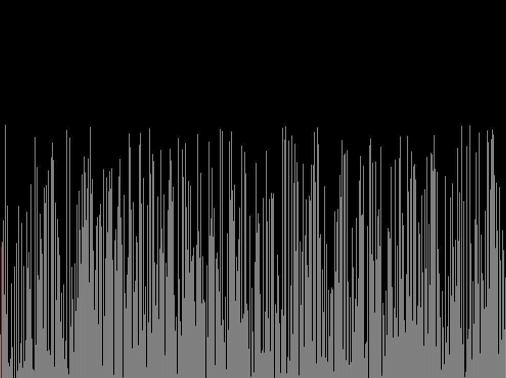

There is an enormous number of bugs in the world of programming, and if every bug turned into a butterfly, the programmer's paradise would already have a couple of meadows set aside for honing your entomology skills. Despite all the perfections of this world — compilers, pvs-studio and other static analyzers, unit tests and QA departments — we always find a way to break through the barriers of code and release a couple of beautiful and handy new species into the wild. I have a txt file, very many years old, where I drop interesting specimens. All the examples and events described in this article are fictional; no intern, junior or student was fired. Hello, World! Where are your bugs?
First…
Let me start, perhaps, with a typo in the code. This code was used in the Unity 2014 engine for rotating objects with a gizmo (a control, usually shaped like three circles, that lets you rotate an object in the scene). Here the setDeltaPitch function changes the object's tilt angle around its vertical axis (pitch). At angles close to 0 (depending on the editor settings) it simply flipped the object upside down, which really annoyed the level designers.
void UObject::setDeltaPitch(const UMatrix &gizmo) {
....
if (_fpzero(amount, eps))
return
rotateAccum.setAnglesXYZ(axis);
....
}So where's the bug?
There's no semicolon after return, which under certain conditions led to setAnglesXYZ being called on the controlled object and flipping it by an arbitrary angle.
Next…
Here the compiler had some fun. This function was used to compute a hash sum of content data when checking file integrity. When content was created, the hash of the files was computed and stored alongside them. Later, when loading the same file, the Unity player recomputed the file's hash and compared it with the stored one to make sure the file hadn't been modified or corrupted. Encryption was applied at the final packaging stage. By the author's intent, the key was never supposed to leak out of this function, but something went wrong. Since this is an asymmetric encryption system, anyone holding the private key can encrypt and sign binaries. On load, those files will look "genuine". Having part of the leaked Unity sources plus this engine bug helped SKIDROW in 2017 break Syberia 3 and a few other big games on this engine that used native content encryption. There was also Denuvo, of course, but those folks had learned to bypass it even earlier.
void UContentPackage::createPackage(dsaFile *m, const void *v, int size) {
unsigned char secretDsaKey[3096], L;
const unsigned char *p = v;
int i, j, t;
....
UContent::generateDsaKey(secretDsaKey, sizeof(salt));
....
// some code was here, working with the variables
// encrypt and sign the file
....
memset (secretDsaKey, 0, sizeof(secretDsaKey));
}So where's the bug?
The memset() call was never executed because of the compiler's aggressive optimization — nothing touched secretDsaKey after memset(), so the compiler simply threw it away. The entire key remained on the stack.
Next…
And here you can get problems when working with either of the a/b variables from two or more threads. This bug was present in the CryTek engine when syncing car state over the network, which caused jerks and teleports while driving in FarCry 1 multiplayer. The more players were on the map, the higher the chance of a teleport for the last player; with 16 players on the map, the last one was reliably teleported if he was using a car.
struct X {
int a : 2
int b : 2
} x;
Thread 1:
void foo() { x.a = 1 }
Thread 2:
void boo() { x.b = 1 }So where's the bug?
A violation of write atomicity. The fields a and b are not atomic, which means they can be executed partially and interrupted by other operations. This code shares access to a composite variable AB made of two two-bit parts. But the compiler can't perform such an assignment atomically — it grabs the whole byte ab at once and sets the needed value with bit operations. This can lead to data races and undefined behavior in a multithreaded environment.
foo(): # @foo()
mov AL, BYTE PTR [RIP + x] ; torn assignment 1
and AL, -4 ; torn assignment 2
or AL, 1 ; torn assignment 3
mov BYTE PTR [RIP + x], AL ; exercise complete
ret
boo(): # @boo()
mov AL, BYTE PTR [RIP + x]
and AL, -13
or AL, 4
mov BYTE PTR [RIP + x], AL
retNext…
This code contains a race even with a "seemingly alive" mutex. The bug was spotted in Nintendo Switch firmware 4.5.1 and above. We ran into it completely by accident while trying to speed up building UI texture atlases at game startup. If we tried to load more than 100 textures into an atlas, we broke it. If fewer, the atlas assembled fine. Such zombie mutexes on the Switch still aren't fixed. And on the Switch you couldn't create more than 256 mutexes per application — what a fun system.
const size_t maxThreads = 10;
void fill_texture_mt(int thread_id, std::mutex *pm) {
std::lock_guard<std::mutex> lk(*pm);
// Access data protected by the lock.
}
void prepare_texture() {
std::thread threads[maxThreads];
std::mutex m;
for (size_t i = 0; i < maxThreads; ++i) {
threads[i] = std::thread(fill_texture_mt, i, &m);
}
}So where's the bug?
We delete the mutex as soon as prepare_texture() finishes. The OS doesn't react to an inactive mutex in any way, because as a kernel object it keeps living for some time and the address is valid and holds correct data — but it no longer provides any real thread locking.
Next…
Functions can be defined to accept more arguments at the call site than declared. Such functions are called variadic. C++ provides two mechanisms for defining a variadic function: a variable-arity template, and the C-style ellipsis as the final parameter declaration. A very nasty behavior was found in the popular audio library FMOD Engine. I give the code as it was in the sources — looks like the guys wanted to save on templates. (https://onlinegdb.com/v4xxXf2zg)
int var_add(int first, int second, ...) {
int r = first + second;
va_list va;
va_start(va, second);
while (int v = va_arg(va, int)) {
r += v;
}
va_end(va);
return r;
}So where's the bug?
In this C-style variadic function for summing a series of integers, arguments are read until a value of 0 is found. Calling this function without passing 0 as an argument (after the first two) leads to undefined behavior. Moreover, passing any type other than int also leads to undefined behavior.
Next…
And here, once again, we didn't lock anything — although at first glance we did. This code was found in the Metro: Exodus engine in a few places handling resources, which caused strange crashes. We found it thanks to bug reports and one smart Frenchman.
static std::mutex m;
static int shared_resource = 0;
void increment_by_42() {
std::unique_lock<std::mutex>(m);
shared_resource += 42;
}So where's the bug?
This is an ambiguity in the code — the expectation is that an anonymous local variable of type std::unique_lock would lock and unlock the mutex m via RAII. However, the declaration is syntactically ambiguous, since it can be interpreted as the declaration of an anonymous object plus a call to its single-argument converting constructor. Compilers for some reason prefer the latter, so the mutex object is never locked.
Next…
And this one was dragged into the repo by one clever student, and somehow slipped through review between two mid-level devs — they must have been drunk. We spent an hour chasing the strange behavior. The student was sent to make coffee for everyone and forbidden from committing on Friday evenings.
// a.h
#ifndef A_HEADER_FILE
#define A_HEADER_FILE
namespace {
int v;
}
#endif // A_HEADER_FILESo where's the bug?
The variable v will be different in every translation unit that uses it, because the final code will be like this:
namespace _abcd { int v; } in file a.cpp
and
namespace _bcda { int v; } in file b.cppso using such a variable, you can't be sure of its current state.
Next…
And this code randomly failed in the release build on different compilers; it was used to compute checksums of areas in PathEngine. The PlayStation solution had a certain flag that masked the problem, and on the Xbox it wasn't there. The bug was discovered when we tried to build the library with clang on PC.
struct AreaCrc32 {
unsigned char buffType = 0;
int crc = 0;
};
AreaCrc32 s1 {};
AreaCrc32 s2 {};
void similarArea(const AreaCrc32 &s1, const AreaCrc32 &s2) {
if (!std::memcmp(&s1, &s2, sizeof(AreaCrc32))) {
// ...
}
}So where's the bug?
The struct will be aligned to 4 bytes, and between buffType and crc there will be garbage bytes that may be filled with zeros, or may be filled with junk.
struct S {
unsigned char buffType = 0;
char[3] _garbage = {} // something, compiler don't care about content in release
int crc = 0;
};memcmp() compares memory bitwise, capturing the garbage bits too, so the result of this operation is undefined for s1, s2. The compiler settings for the PlayStation explicitly told the compiler to fill the garbage bytes with zeros. The C++ rules for structs say we should use operator== here, and memcmp is not meant for struct equality.
Next…
As a follow-up to the previous one, here's something that showed up at a review once. We caught it in time.
class C {
int i;
public:
virtual void f();
// ...
};
void similar(C &c1, C &c2) {
if (!std::memcmp(&c1, &c2, sizeof(C))) {
// ...
}
}So where's the bug?
Comparing C++ structs and classes via memcmp is a bad idea, since c2 could be a derived class with a different vtbl. And the vtbl sits first in the class, so these classes will never pass the check even if all the data is identical.
Next…
You know why a programmer needs two monitors? So that on one he can look at the code he just broke, and on the other at the code that's still compiling.
So where's the bug?
It's definitely somewhere — there is no code without bugs.
Next…
This one should be pretty simple, but for some reason candidates often stumble on such things in interviews.
struct S { S(const S *) noexcept; /* ... */ };
class T {
int n;
S *s1;
public:
T(const T &rhs) : n(rhs.n),
s1(rhs.s1 ? new S(rhs.s1) : nullptr) {}
~T() { delete s1; }
// ...
T& operator=(const T &rhs) {
n = rhs.n;
delete s1;
s1 = new S(rhs.s1);
return *this;
}
};So where's the bug?
In the assignment operator we didn't check that the object might be assigned to itself. As a result we'll delete ourselves and load some garbage.
Next…
Even in four lines of code you can catch a non-obvious bug. Especially if it's the Unity Engine, which loves to include shared headers in different DLLs and then compare them like super_secret() == super_secret(). What could possibly go wrong — but a secret != a secret, and the game won't load on Windows Phone.
// header a.h
constexpr inline const char* super_secret(void) {
constexpr const char *STRING = "string";
return STRING;
}
// a.dll
super_secret() == super_secret()
// b.dll
super_secret() != super_secret()So where's the bug?
The bug is that the shared header a.h was used in different libraries. Everything worked while the engine was built as a single DLL, but once you build two separate DLLs you get two different addresses for STRING. And the real bug is that strings are compared by pointers instead of via strcmp.
Next…
You could watch forever as water flows, fire burns, and a sort runs.

Next…
I distrust the compiler so much that I even check that this != null. You know where I found this code? You've probably guessed :) Unity Engine, 2014 vintage — and maybe it's still there.
class URendererOpengl : URendererBase {
...
void commitDraw() {
if (this == nullptr) {
// WTF?
}
}
...
}
struct A {
int x = 0;
void bar() { std::cout << "bar" << std::endl; }
};
int main() {
A *a = nullptr;
a->bar();
}So where's the bug?
Formally there's no bug — we can call a class's functions without touching the instance data of that class. In this particular case we end up with a degenerate member function.
Next…
Which of these loops runs faster? The Visual Studio release compiler flags are /GS /W4 /Gm- /Ox /Ob2 /Zc:inline /fp:precise. I think it'll be the same on clang.
int steps = 32 * 1024 * 1024;
int* a = new int[2];
1. for (int i = 0; i < steps; i++) { a[0]++; a[0]++; }
2. for (int i = 0; i < steps; i++) { a[0]++; a[1]++; }So who's faster?
The second one will be faster, thanks to instruction-level parallelism on the CPU. Both ++ instructions go into execution at the same time, but in the first loop — unless the compiler cheats — there's a data dependency stall while the first ++ executes. But this happens at the processor level already; the compiler here can really only cheat with loop unrolling and the like.


Next…
This function can have UB with a buffer overflow. It often happens on clang with -O3 optimization, and doesn't happen with -O0. On clang 12.10 and above it's already fixed for all optimization modes. The code isn't mine; it surfaced at some interview while we were just chatting.
char destBuffer[16] = {0};
void serialize(bool x) {
const char* whichString = x ? "true" : "false";
const size_t len = strlen(whichString);
memcpy(destBuffer, whichString, len);
}
int main() {
bool x;
serialize(x);
}So where's the bug?
The compiler outsmarted itself. So what's happening? Aggressive optimization turns this into len = 5 - x; a bool isn't strictly 1/0, it depends on the compiler. Clang treats 0 as false and anything else as true. x is uninitialized, so in some cases we get len = 5–7? And it crashes in memcpy on a buffer overflow.
Next…
// Delight the world yourself with new species of buGs :)
int main() {
printf("Hello, World! Where are your bugs?");
}I hope you enjoyed this little collection. And to know and understand the different species of these insects, it helps to glance now and then at the good-code rules.
Why does a programmer need two monitors?
P.S. The sequel is here.
← All articles